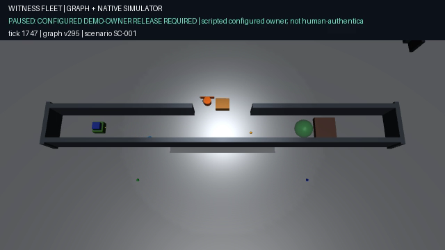

A QUESTION OF AUTHORITY
AI SUGGESTION↛MOTION
Control logic illustrationINTRODUCING
Witness
Fleet.
Evidence before motion.
THREE ROLES. ONE SHARED WORLD.
A blocked corridor.
A waiting delivery.
Explanatory robot illustrations · original native scene followsFALKORDB · IN THE CONTROL PATH
Every move has
a reason you can trace.
01SOURCEretained revision
02POLICYscoped rule
03OWNERexplicit release
04OBSERVATIONfresh measurement
05COMMANDbounded effect
LANGUAGE MODELADVISORY, NOT AUTHORITY
Explanatory relationship diagram · not a live graph snapshotRECORDED MUJOCO SIMULATION · SC-001
Evidence.
Not assumptions.
NATIVE PHYSICSObserve.
Contact.
Measure.Real recovery excerpt.
Source footage: 640 × 360.
Contact.
Measure.Real recovery excerpt.
Source footage: 640 × 360.
THE PERMISSION GAP
Clear path.
Still waiting.

OWNER GATEPermission
is separate.Configured demo-owner release.
Not human-authenticated.
is separate.Configured demo-owner release.
Not human-authenticated.
RECORDED MUJOCO SIMULATION · COURIER DELIVERY
Fresh evidence.
Then delivery.
NATIVE OUTCOMEArrival is
measured.Final delivery excerpt.
Not an illustrative animation.
measured.Final delivery excerpt.
Not an illustrative animation.
RETAINED RUN · COMMAND-BOUND OUTCOMES
The receipt stays.
scoutinspect
command-2a50c30e75…VERIFIEDrecoveryrecover
command-c146305e9e…VERIFIEDscouttravel
command-779e86946d…VERIFIEDscoutverify
command-3f4d5bd2e7…VERIFIEDcouriertravel
command-f4836d20e9…VERIFIEDcourierverify
command-12dee9024d…VERIFIEDcourierdeliver
command-974485c2a0…VERIFIEDFAIL-CLOSED CONTRACT
SENT / UNKNOWN→NO AUTOMATIC RETRY
Logic illustration. Restart / unknown-outcome tests are separate from the recorded mission.SEVEN TASKS. ONE TRACEABLE MISSION.
OPEN DESIGN MOTIONProof beyond
the frame.Excerpt from the previously
rendered evidence film.
the frame.Excerpt from the previously
rendered evidence film.
SCOPE, WITHOUT THE SMALL PRINT
Simulation-first.
Not safety-certified.
Synthetic company policy.
Native physical observations.
No model-authorized movement.
WITNESS FLEET
Explore the evidence. Try the demo. Read the code.
github.com/guglxni/witness-fleet
HyperFrames + OpenDesign Motion · ElevenLabs Sarah · real MuJoCo recording
A robot shouldn't move just because an
AI sounds confident.
It should move when the evidence says
it can.
Meet Witness Fleet, evidence before motion, a
blocked corridor, a waiting delivery, three robots
with different jobs and one question, who
has the authority to move?
Witness Fleet connects the answer in Falkor
DB, the source, the policy, the owner,
the observation, and the command.
Language model suggestions are advisory, they don't
get the keys.
Now watch the actual simulation, the scout
inspects, the recovery robot clears the obstruction,
physical observations are retained, not guessed, and
the courier still waits because a clear
path is not the same as permission.
This recorded run uses an explicit, configured
demo owner release, then the courier checks
the route with fresh evidence of its
own and makes the delivery.
Every completed task leaves a command-bound receipt.
If a command's outcome is unknown, the
fleet holds.
It doesn't guess and send it again.
Seven tasks, one traceable mission.
This is a simulation-first system, not a
claim of production robot safety.
Explore the evidence, try the demo, read
the code.
Witness Fleet, motion you can account for.